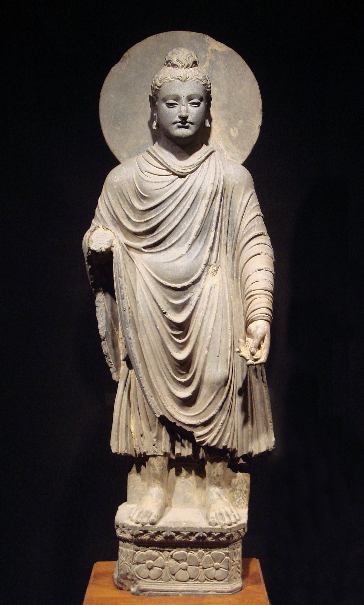

Consolation of Grief
English translation of Śokavinodana attributed to Aśvaghoṣa
INTRODUCTION
The first Sanskrit poet that wrote kāvya style poetry, either epic or drama, that we still possess in any substantial way is the Buddhist master Aśvaghoṣa. The traditional accounts (usually preserved in Chinese texts) associate him with the court of the great Kushan king Kanishka (r. 127-151 CE). This date is generally accepted, though some scholars support an earlier date in the first century. Around half of his epic on the life of the Buddha (Buddhacarita) has survived in Sanskrit[1] while the whole survives in early translations to Chinese and Tibetan. A drama is extant completely and another one in fragments. Along with these, which are universally admitted to be of _Aśvaghoṣa’_s authorship, there are a lot of smaller texts that are attributed to him in manuscripts and in tradition, but there is uncertainty about their attribution. Scholars are usually hesitant to accept the genuine authorship in those cases.

Fig: Graeco-Buddhist Buddha Statue, 1st Century CE. Gandhara
Recently, as a part of a larger work called Tridaṇḍamālā from Tibet, researchers found the Sanskrit original of the text called Śokavinodana (Consolation of Grief) that was otherwise available only in a Tibetan translation. Some fragments of this text found in ancient manuscripts from Central Asia show that it’s certainly ancient. The scholars who are working on the Tridaṇḍamālā, however, seem not to accept the ascription.[2]
Whatever the authorship, Śokavinodana is written in simple but elegant anuṣṭup[3] verses. Except for a few terms specific to Buddhist doctrines, the ideas presented are common to Buddhists, Jains, and Hindus. It is, as Silk termed the Praśnottararatnamālā, trans-sectual.
Peter Daniel Szanto has published a translation into Hungarian but I am unaware of any previous complete English translation. The translation presented here is my own. I’ve translated as literally as I could without making the whole thing unintelligible. Each verse usually consists of a simple sentence followed by an example or metaphor related to it. I have refrained from translating a couple of words like karman, which, though not in exact theological niceties, is familiar enough to English speakers. Another word I have kept as it is is saṃsāra. I’ve often seen something like ‘cycle of rebirth’. And in many contexts, it does primarily mean that but it is often the normal word for the mundane world[4] and should not be unnecessarily overcomplicated.
TRANSLATION
kaścit priyaviyogārtaḥ
pradīptaḥ śokavahninā
dhṛtim ālambya yatnena
svacittaṃ paribhāṣate ॥ 1 ॥
Someone hurt by the loss of a loved one, aflame with the fire of grief, gathered strength with effort and said to his own mind:
prāptakarmapathārūḍho
vināhūtena yo janaḥ
gato vināparādhena
tatra kiṃ paritapyase ॥ 2 ॥
“He was on the path of karma without anyone’s command and went without any fault. Why do you grieve over this?
yadi tasyaiva maraṇaṃ
bhaven nānyasya kasyacit
uccair ākrandituṃ yuktaṃ
mahān paribhavo hy ayam ॥ 3 ॥
If death was to exist for him and no one else, it would be okay to cry loudly. That would be a great loss indeed.
atha sarvasya jātasya
sthitaṃ maraṇam agrataḥ
sāmānyaṃ vyasanaṃ dṛṣṭvā
na śokaṃ kartum arhasi ॥ 4 ॥
But death stands before everyone who is born. See that it is a misfortune common to all and do not grieve.
priyasaṅgamalobhena
janaḥ śokena dahyate
camarī vālalobhena
dāveneva vanāntare ॥ 5 ॥
Greedy to unite with his beloved, a person is burned by grief - like a yak hoping to save here tail is burned by wildfire in the forest.
yadā sarvaiḥ prayātavyaṃ
yatra tatra gato hy asau
kim arthaṃ kriyate śokas
tasmin pūrvataraṃ gate ॥ 6 ॥
When everyone must go where he has gone, why do you grieve if he has gone a little sooner?
mṛtyor atyugradaṇḍasya
pramattā khalviyaṃ prajā
vane jighāṃsoḥ siṃhasya
mṛgīvābhimukhī sthitā ॥ 7 ॥
Everyone is heedless before Death, who bears the terrible staff - like a doe in the forest standing before a lion trying to kill here.
sarvopāyair yadā nāsti
martavyasya pratikriyā
dhṛtim ālambase kasmāj
jalān mīna ivoddhṛtaḥ ॥ 8 ॥
If there is no return for a mortal by any means, why do you not support yourself, like a fish out of water?
kaścit tāvat tvayā dṛṣṭaḥ
śruto vā śaṅkito’pi vā
kṣitau vā yadi vā svarge
jāto yo na mariṣyati ॥ 9 ॥
Have you ever seen or heard or even suspected anyone, either in earth or in heaven, who will not die?
traidhātukam idaṃ kṛtsnaṃ
dahyate’nityatāgniṇā
dāvāgninā pradīptena
vanaṃ kusumitaṃ yathā ॥ 10 ॥
Everything formed of three elements is burned by the fire of impermanence - like a flowering forest in burnt up by wildfire.
nityasaṃjñāviparyastā
bhavāgrād api jantavaḥ
kṛṣyante mṛtyupāśena
pāśeneva mahāgajaḥ ॥ 11 ॥
Even the sublime beings, thinking themselves eternal, are pulled down by the fetters of impermanence - like a great elephant is brought down by fetters.
niṣevya dhyānajaṃ saukhyaṃ
brahmā brahmālayāt punaḥ
nipātyate’nityatayā
nadīkūlam ivāmbunā ॥ 12 ॥
Having experienced the bliss of meditation, even Brahmā[5] is brought down from the Brahmā-world by impermanence - like riverbanks by water.
purandarasahasrāṇi
cakravartiśatāni ca
nirvāpitāni kālena
pradīpā iva vāyunā ॥ 13 ॥
A thousand Indra-s[6] and a hundred Cakravartin-s[7] have been extinguished by time - like lamps by the wind.
gatvāpi dūram ākāśaṃ
pañcabhijñā maharṣayaḥ
tatra gantum aśaktās te
yatra mṛtyor agocaraḥ ॥ 14 ॥
Even though the great sages, endowed with five powers, could reach the far sky, they couldn’t go there where death does not exist.
pṛthivī dahyate yatra
meruś cāpī viśīryate
śuṣyate sāgarajalaṃ
śarīre tatra kā kathā ॥ 15 ॥
Where the earth is burnt, Meru[8] is shattered and ocean’s waters dry up, what can one say about a (mere) body?
vajrasāraśarīrāṇāṃ
buddhānāṃ yady anityatā
kadalīgarbhatulyeṣu
kā cintānyeṣu dehiṣu ॥ 16 ॥
If even the Buddha-s , whose bodies are made up of the essence of thunderbolt, are impermanent, what hope is there for beings who are like the banana leaves ?
hriyate mṛtyunā jantuḥ
pariṣvakto’pi bāndhavaiḥ
sāgarāntarjalagato
garuḍeneva pannagaḥ ॥ 17 ॥
Death snatches every creature, even if it is being embraced by its kin - like Garuḍa [9]snatches up serpents out of the ocean.
hā jīvaloka hā kānte
krandamānaṃ sudāruṇam
maṇḍūkā iva sarpeṇa
gūryate mṛtyunā jagat ॥ 18 ॥
“Alas! the mundane world! Alas, my beloved!”. Death devours a man crying sadly like this - like a serpent devours a frog.
agatvā khalv ayaṃ lokaḥ
kāryapāraṃ sudustaram
praviśaty ānanaṃ mṛtyoḥ
poto vā makarālayam ॥ 19 ॥
Without finishing the end of his endless tasks here, living beings enter the mouth of death - like a ship enters the ocean.
paralokaṃ yadā kaścid
gacchantaṃ nānugacchati
nirviśeṣo bhavet tatra
dveṣyo vā yadi vā priyaḥ ॥ 20 ॥
No one follows a person going to the next world. It doesn’t matter whether the dead person was hated or loved.
kṛtvā parajane snehaṃ
janaḥ svajanasaṃjñayā
majjaty āśāmaye paṅke
mahāpaṅke yathā gajaḥ ॥ 21 ॥
Placing affection on his kin and thinking them to be his own people, a person sinks into the swamp of hope - like an elephant sinks into a swamp.
labdhās tyaktāś ca saṃsāre
yāvanto bāndhavās tvayā
na santi khalu tāvantyo
gaṅgāyām api bālukāḥ ॥ 22 ॥
Surely, there are not as many grains of sand in the Ganges as the number of kinsmen you’ve found and lost in this saṃsāra.
ya eva te prayatnena
lālitaḥ putrasaṃjñayā
sa eva janmāntaritas
tāḍitaḥ śatrusaṃjñayā ॥ 23 ॥
One beats up as an enemy in another life, the same person that he loves as his son in this one.
yasyaiva te stanau pītau
svajanasya bhavāntare
tasyaiva rudhiraṃ pītaṃ
hatvā māṃsaṃ ca bhakṣitam ॥ 24 ॥
One kills, drinks blood and eats the flesh in another life of the same person that he drinks out of the breasts in this one.[10]
ya eva te bhaved bhartā
śataśaḥ śirasārcitaḥ
sa eva te bhaved dāsaḥ
pādena śataśo hataḥ ॥ 25 ॥
The same person who was one’s master, to whom one bows his head for a hundred times, becomes one’s slave in the next life, kicked by the feet a hundred times.
anyathā dṛśyate pūrvam
anyathā parivartate
janaḥ kāraṇabhāvena
saptarṣīṇāṃ yathā gaṇaḥ ॥ 26 ॥
A person seems one way at first and becomes another again due to causality - like the movement of the seven sages[11].
samāgamya viśīryante
yathā khe varṣabindavaḥ
samāgamya vinaśyanti
saṃsāre prāṇinas tathā ॥ 27 ॥
As raindrops that meet and scatter in the sky, so beings meet and disappear in this saṃsāra.
saṃgamo vigamaś caiva
muhūrtam iha dehinām
nadyām udbhrāntavelāyāṃ
kāṣṭhānāṃ plavatām iva ॥ 28 ॥
Just for a moment is the meeting and farewell of mortals here - like that of wood beams floating in a flooding river.
aho mohasya sāmarthyaṃ
yena vyāmohitaṃ jagat
viyogaduḥkhaṃ vismṛtya
saṃyoge praṇayaḥ kṛtaḥ ॥ 29 ॥
Alas! great is the power of delusion that has made the world insane. People forget the sorrow of separation and want to meet again.
raṅgabhūmir na sā kācic
chuddhāvāsavivarjitā
vicitraiḥ karmanepathyair
yatra sattvair na nāṭitam ॥ 30 ॥
There is no theatre stage, except the pure worlds, where various beings have not acted a drama with the karma as backstage.
yat pītaṃ kvathitaṃ tāmraṃ
narakeṣu punaḥ punaḥ
tatpramāṇaṃ jalaṃ naiva
samudreṣvapi vidyate ॥ 31 ॥
There is not as much water in all the seas of the world as we have drunk molten copper again and again in the pits of hells.
purīṣabhakṣaṇaṃ yac ca
śvavarāhagatau kṛtam
meroḥ parvatarājasya
pramāṇād adhikaṃ bhavet ॥ 32 ॥
And the amount of excreta that we have consumed, like dogs and boars, is greater than even Meru, king of the mountains.
ruditaṃ yac ca saṃsāre
bandhūnāṃ viprayogataḥ
teṣāṃ netrāśrubindūnām
samudro’pi na bhājanam ॥ 33 ॥
And even the ocean is not able to hold the amount of tears that people have cried over the loss of their kin.
śirāṃsi yāni cchinnāni
bhojanārthe parasparam
teṣām uccataro rāśir
brahmalokād viśiṣyate ॥ 34 ॥
The large heap of heads people have cut off of each other for food is greater than even the world of Brahmā.
bhakṣitāḥ pāṃsavo ye’tra
kṛmibhūtair bubhukṣitaiḥ
pūraṇaṃ tat suparyāptaṃ
kṣīrodasya mahodadheḥ ॥ 35 ॥
The amount of filth that have been eaten by hungry beings turned to worms is easily enough to fill the milky sea.
kṣuttarṣaduḥkhaṃ yat prāptaṃ
pretaloke sudāruṇam
tacchrutvā kaḥ sahṛdayaḥ
svamāṃsāny api na tyajet ॥ 36 ॥
Having listened to the great sorrow over hunger and thirst that have been endured in the world of the departed, is there any compassionate man who wouldn’t sacrifice his own flesh.
nṛṣu dāridryadoṣeṇa
yānubhūtā viḍambanā
tāṃ vaktum asamartho’smi
jihvā lajāvatīva me ॥ 37 ॥
I’m unable to even describe the humiliations that people have endured over poverty. My tongue is ashamed.
nākapṛṣṭhe ciraṃ saukhyam
anubhūya divaukasaḥ
atṛptā viṣayair divyaiḥ
śuṣkakāṣṭhair ivāgnayaḥ ॥ 38 ॥
punaḥ triviṣṭapād bhraṣṭā
gāṃ patanti gatāyuṣaḥ
śubhakarmaparikṣīṇāś
cchinnapakṣāḥ khagā iva ॥ 39 ॥
After enjoying the pleasures of heaven for a long time and still unsatiated, like fires are not satiated with dry wood, they fall again to the earth like birds with their wings cut, their ages spent and their good deeds coming to an end.
karmāviddhaṃ jagad idaṃ
yasmād bhramati cakravat
tasmāt saṅgaṃ parityajya
mokṣe buddhir niveśyatām ॥ 40 ॥”
As the world pierced by karma rolls on like a wheel, give up attachment and place your mind on liberation.”
BIBLIOGRAPHY
Hartmann, Jens-Uwe; Matsuda, Kazunobu; Szántó, Péter-Dániel. “The Benefit of Cooperation: Recovering the Śokavinodana Ascribed to Aśvaghoṣa.” Dharmayātrā: Papers on Ancient South Asian Philosophies, Asian Culture and Their Transmission (2022). PDF available via OpenPhilology.
Szántó, Péter-Dániel. “Aśvaghoṣa, Gyászbeszéd.” Keletkutatás 2022 (tavasz), pp. 5–20. ISSN: 0133-4778. DOI: 10.24391/KELETKUT.2022.1.5
Silk, Jonathan A., and Péter-Dániel Szántó. 2019. “Trans-Sectual Identity: Materials for the Study of the Praśnottararatnamālikā, a Hindu/Jaina/Buddhist Catechism (I).” Indo-Iranian Journal 62 (2): 103–161. https://doi.org/10.1163/15728536-06202001.
The most recent translation of the Buddhacarita by Patrick Olivelle (2008) contains the first fourteen chapters. The fifteenth chapter was discovered recently by Kazunobu Matsuda in 2020. The transmission of the Buddhacarita in India is a fascinating topic in itself and deserves more attention. ↑
There’s not much scholarship except some recent publications by the team working on _Tridaṇḍamālā._Two of their articles are listed in the bibliography. The Sanskrit text is taken from Szanto’s article with the Hungarian translation. ↑
The anuṣṭup metre consists of 4 feets of eight syllable each. The first and third feets have the pattern X X X X I S S X while the second and fourth feets have the pattern X X X X I S I X. Here I is a light syllable, S is a heavy syllable and X is anceps. ↑
saṃsāra is the standard word for world in many New Indo-Aryan languages. ↑
The Creator god. ↑
King of the gods. Here an epithet is used - Puran.dara ‘Fort destroyer’. ↑
Whell-turning (emperor). One whose chariot travels freely without opposition from any rival. ↑
Mountain at the centre of the world. Axis mundi. ↑
Garuḍa is a mythical bird based on some kind of predatory avian, probably kite or falcon. Eating snakes, towards which he bears a great enmity, is his favorite pasttime. ↑
The intended meaning here is that a human may be reborn as an animal only to be eaten by humans, not literal cannibalism. ↑
The seven sages are the stars of the constellation Ursa Maior (the Great Bear). ↑